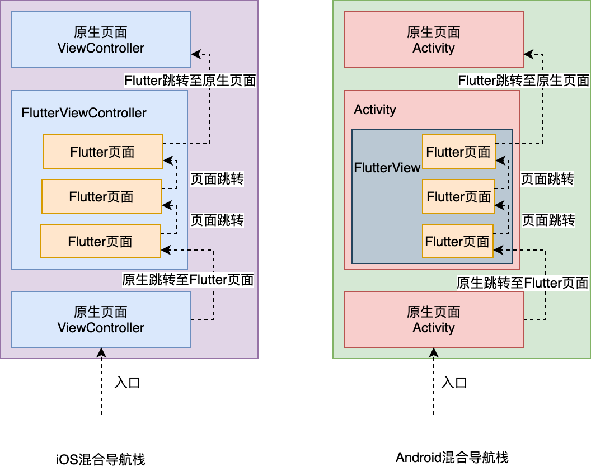
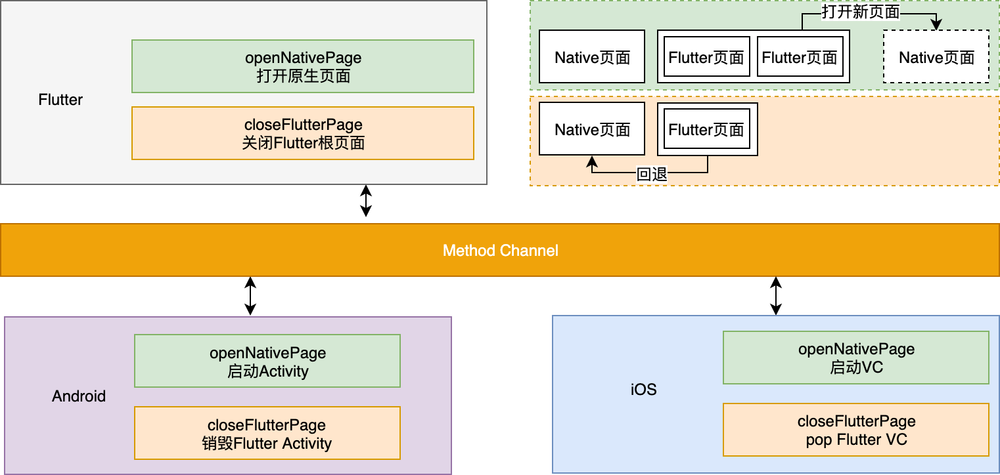
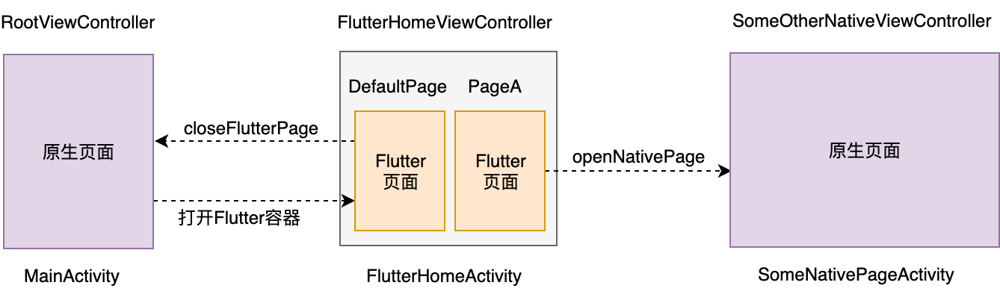

- 00 开篇词 为什么每一位大前端从业者都应该学习Flutter？.md.html
- 01 预习篇 · 从0开始搭建Flutter工程环境.md.html
- 02 预习篇 · Dart语言概览.md.html
- 03 深入理解跨平台方案的历史发展逻辑.md.html
- 04 Flutter区别于其他方案的关键技术是什么？.md.html
- 05 从标准模板入手，体会Flutter代码是如何运行在原生系统上的.md.html
- 06 基础语法与类型变量：Dart是如何表示信息的？.md.html
- 07 函数、类与运算符：Dart是如何处理信息的？.md.html
- 08 综合案例：掌握Dart核心特性.md.html
- 09 Widget，构建Flutter界面的基石.md.html
- 10 Widget中的State到底是什么？.md.html
- 11 提到生命周期，我们是在说什么？.md.html
- 12 经典控件（一）：文本、图片和按钮在Flutter中怎么用？.md.html
- 13 经典控件（二）：UITableView_ListView在Flutter中是什么？.md.html
- 14 经典布局：如何定义子控件在父容器中排版的位置？.md.html
- 15 组合与自绘，我该选用何种方式自定义Widget？.md.html
- 16 从夜间模式说起，如何定制不同风格的App主题？.md.html
- 17 依赖管理（一）：图片、配置和字体在Flutter中怎么用？.md.html
- 18 依赖管理（二）：第三方组件库在Flutter中要如何管理？.md.html
- 19 用户交互事件该如何响应？.md.html
- 20 关于跨组件传递数据，你只需要记住这三招.md.html
- 21 路由与导航，Flutter是这样实现页面切换的.md.html
- 22 如何构造炫酷的动画效果？.md.html
- 23 单线程模型怎么保证UI运行流畅？.md.html
- 24 HTTP网络编程与JSON解析.md.html
- 25 本地存储与数据库的使用和优化.md.html
- 26 如何在Dart层兼容Android_iOS平台特定实现？（一）.md.html
- 27 如何在Dart层兼容Android_iOS平台特定实现？（二）.md.html
- 28 如何在原生应用中混编Flutter工程？.md.html
- 29 混合开发，该用何种方案管理导航栈？.md.html
- 30 为什么需要做状态管理，怎么做？.md.html
- 31 如何实现原生推送能力？.md.html
- 32 适配国际化，除了多语言我们还需要注意什么_.md.html
- 33 如何适配不同分辨率的手机屏幕？.md.html
- 34 如何理解Flutter的编译模式？.md.html
- 35 Hot Reload是怎么做到的？.md.html
- 36 如何通过工具链优化开发调试效率？.md.html
- 37 如何检测并优化Flutter App的整体性能表现？.md.html
- 38 如何通过自动化测试提高交付质量？.md.html
- 39 线上出现问题，该如何做好异常捕获与信息采集？.md.html
- 40 衡量Flutter App线上质量，我们需要关注这三个指标.md.html
- 41 组件化和平台化，该如何组织合理稳定的Flutter工程结构？.md.html
- 42 如何构建高效的Flutter App打包发布环境？.md.html
- 43 如何构建自己的Flutter混合开发框架（一）？.md.html
- 44 如何构建自己的Flutter混合开发框架（二）？.md.html
- 特别放送 温故而知新，与你说说专栏的那些思考题.md.html
- 结束语 勿畏难，勿轻略.md.html
- 捐赠
29 混合开发，该用何种方案管理导航栈？
你好，我是陈航。
为了把Flutter引入到原生工程，我们需要把Flutter工程改造为原生工程的一个组件依赖，并以组件化的方式管理不同平台的Flutter构建产物，即Android平台使用aar、iOS平台使用pod进行依赖管理。这样，我们就可以在Android工程中通过FlutterView，iOS工程中通过FlutterViewController，为Flutter搭建应用入口，实现Flutter与原生的混合开发方式。
我在第26篇文章中提到，FlutterView与FlutterViewController是初始化Flutter的地方，也是应用的入口。可以看到，以混合开发方式接入Flutter，与开发一个纯Flutter应用在运行机制上并无任何区别，只需要原生工程为它提供一个画板容器（Android为FlutterView，iOS为FlutterViewController），Flutter就可以自己管理页面导航栈，从而实现多个复杂页面的渲染和切换。
关于纯Flutter应用的页面路由与导航，我已经在第21篇文章中与你介绍过了。今天这篇文章，我会为你讲述在混合开发中，应该如何管理混合导航栈。
对于混合开发的应用而言，通常我们只会将应用的部分模块修改成Flutter开发，其他模块继续保留原生开发，因此应用内除了Flutter的页面之外，还会有原生Android、iOS的页面。在这种情况下，Flutter页面有可能会需要跳转到原生页面，而原生页面也可能会需要跳转到Flutter页面。这就涉及到了一个新的问题：如何统一管理原生页面和Flutter页面跳转交互的混合导航栈。
接下来，我们就从这个问题入手，开始今天的学习吧。
混合导航栈
混合导航栈，指的是原生页面和Flutter页面相互掺杂，存在于用户视角的页面导航栈视图中。
以下图为例，Flutter与原生Android、iOS各自实现了一套互不相同的页面映射机制，即原生采用单容器单页面（一个ViewController/Activity对应一个原生页面）、Flutter采用单容器多页面（一个ViewController/Activity对应多个Flutter页面）的机制。Flutter在原生的导航栈之上又自建了一套Flutter导航栈，这使得Flutter页面与原生页面之间涉及页面切换时，我们需要处理跨引擎的页面切换。

图1 混合导航栈示意图
接下来，我们就分别看看从原生页面跳转至Flutter页面，以及从Flutter页面跳转至原生页面，应该如何处理吧。
从原生页面跳转至Flutter页面
从原生页面跳转至Flutter页面，实现起来比较简单。
因为Flutter本身依托于原生提供的容器（iOS为FlutterViewController，Android为Activity中的FlutterView），所以我们通过初始化Flutter容器，为其设置初始路由页面之后，就可以以原生的方式跳转至Flutter页面了。
如下代码所示。对于iOS，我们初始化一个FlutterViewController的实例，为其设置初始化页面路由后，将其加入原生的视图导航栈中完成跳转。
对于Android而言，则需要多加一步。因为Flutter页面的入口并不是原生视图导航栈的最小单位Activity，而是一个View（即FlutterView），所以我们还需要把这个View包装到Activity的contentView中。在Activity内部设置页面初始化路由之后，在外部就可以采用打开一个普通的原生视图的方式，打开Flutter页面了。
//iOS 跳转至Flutter页面
FlutterViewController *vc = [[FlutterViewController alloc] init];
[vc setInitialRoute:@"defaultPage"];//设置Flutter初始化路由页面
[self.navigationController pushViewController:vc animated:YES];//完成页面跳转
//Android 跳转至Flutter页面
//创建一个作为Flutter页面容器的Activity
public class FlutterHomeActivity extends AppCompatActivity {
protected void onCreate(Bundle savedInstanceState) {
super.onCreate(savedInstanceState);
//设置Flutter初始化路由页面
View FlutterView = Flutter.createView(this, getLifecycle(), "defaultRoute"); //传入路由标识符
setContentView(FlutterView);//用FlutterView替代Activity的ContentView
}
}
//用FlutterPageActivity完成页面跳转
Intent intent = new Intent(MainActivity.this, FlutterHomeActivity.class);
startActivity(intent);
从Flutter页面跳转至原生页面
从Flutter页面跳转至原生页面，则会相对麻烦些，我们需要考虑以下两种场景：
- 从Flutter页面打开新的原生页面；
- 从Flutter页面回退到旧的原生页面。
首先，我们来看看Flutter如何打开原生页面。
Flutter并没有提供对原生页面操作的方法，所以不可以直接调用。我们需要通过方法通道（你可以再回顾下第26篇文章的相关内容），在Flutter和原生两端各自初始化时，提供Flutter操作原生页面的方法，并注册方法通道，在原生端收到Flutter的方法调用时，打开新的原生页面。
接下来，我们再看看如何从Flutter页面回退到原生页面。
因为Flutter容器本身属于原生导航栈的一部分，所以当Flutter容器内的根页面（即初始化路由页面）需要返回时，我们需要关闭Flutter容器，从而实现Flutter根页面的关闭。同样，Flutter并没有提供操作Flutter容器的方法，因此我们依然需要通过方法通道，在原生代码宿主为Flutter提供操作Flutter容器的方法，在页面返回时，关闭Flutter页面。
Flutter跳转至原生页面的两种场景，如下图所示：

图2 Flutter页面跳转至原生页面示意图
接下来，我们一起看看这两个需要通过方法通道实现的方法，即打开原生页面openNativePage，与关闭Flutter页面closeFlutterPage，在Android和iOS平台上分别如何实现。
注册方法通道最合适的地方，是Flutter应用的入口，即在FlutterViewController（iOS端）和Activity中的FlutterView（Android端）这两个容器内部初始化Flutter页面前。为了将Flutter相关的行为封装到容器内部，我们需要分别继承FlutterViewController和Activity，在其viewDidLoad和onCreate初始化容器时，注册openNativePage和closeFlutterPage这两个方法。
iOS端的实现代码如下所示：
@interface FlutterHomeViewController : FlutterViewController
@end
@implementation FlutterHomeViewController
- (void)viewDidLoad {
[super viewDidLoad];
//声明方法通道
FlutterMethodChannel* channel = [FlutterMethodChannel methodChannelWithName:@"samples.chenhang/navigation" binaryMessenger:self];
//注册方法回调
[channel setMethodCallHandler:^(FlutterMethodCall* call, FlutterResult result) {
//如果方法名为打开新页面
if([call.method isEqualToString:@"openNativePage"]) {
//初始化原生页面并打开
SomeOtherNativeViewController *vc = [[SomeOtherNativeViewController alloc] init];
[self.navigationController pushViewController:vc animated:YES];
result(@0);
}
//如果方法名为关闭Flutter页面
else if([call.method isEqualToString:@"closeFlutterPage"]) {
//关闭自身(FlutterHomeViewController)
[self.navigationController popViewControllerAnimated:YES];
result(@0);
}
else {
result(FlutterMethodNotImplemented);//其他方法未实现
}
}];
}
@end
Android端的实现代码如下所示：
//继承AppCompatActivity来作为Flutter的容器
public class FlutterHomeActivity extends AppCompatActivity {
@Override
protected void onCreate(Bundle savedInstanceState) {
super.onCreate(savedInstanceState);
//初始化Flutter容器
FlutterView flutterView = Flutter.createView(this, getLifecycle(), "defaultPage"); //传入路由标识符
//注册方法通道
new MethodChannel(flutterView, "samples.chenhang/navigation").setMethodCallHandler(
new MethodCallHandler() {
@Override
public void onMethodCall(MethodCall call, Result result) {
//如果方法名为打开新页面
if(call.method.equals("openNativePage")) {
//新建Intent，打开原生页面
Intent intent = new Intent(FlutterHomeActivity.this, SomeNativePageActivity.class);
startActivity(intent);
result.success(0);
}
//如果方法名为关闭Flutter页面
else if(call.method.equals("closeFlutterPage")) {
//销毁自身(Flutter容器)
finish();
result.success(0);
}
else {
//方法未实现
result.notImplemented();
}
}
});
//将flutterView替换成Activity的contentView
setContentView(flutterView);
}
}
经过上面的方法注册，我们就可以在Flutter层分别通过openNativePage和closeFlutterPage方法，来实现Flutter页面与原生页面之间的切换了。
在下面的例子中，Flutter容器的根视图DefaultPage包含有两个按钮：
- 点击左上角的按钮后，可以通过closeFlutterPage返回原生页面；
- 点击中间的按钮后，会打开一个新的Flutter页面PageA。PageA中也有一个按钮，点击这个按钮之后会调用openNativePage来打开一个新的原生页面。
void main() => runApp(_widgetForRoute(window.defaultRouteName));
//获取方法通道
const platform = MethodChannel('samples.chenhang/navigation');
//根据路由标识符返回应用入口视图
Widget _widgetForRoute(String route) {
switch (route) {
default://返回默认视图
return MaterialApp(home:DefaultPage());
}
}
class PageA extends StatelessWidget {
...
@override
Widget build(BuildContext context) {
return Scaffold(
body: RaisedButton(
child: Text("Go PageB"),
onPressed: ()=>platform.invokeMethod('openNativePage')//打开原生页面
));
}
}
class DefaultPage extends StatelessWidget {
...
@override
Widget build(BuildContext context) {
return Scaffold(
appBar: AppBar(
title: Text("DefaultPage Page"),
leading: IconButton(icon:Icon(Icons.arrow_back), onPressed:() => platform.invokeMethod('closeFlutterPage')//关闭Flutter页面
)),
body: RaisedButton(
child: Text("Go PageA"),
onPressed: ()=>Navigator.push(context, MaterialPageRoute(builder: (context) => PageA())),//打开Flutter页面 PageA
));
}
}
整个混合导航栈示例的代码流程，如下图所示。通过这张图，你就可以把这个示例的整个代码流程串起来了。

图3 混合导航栈示例
在我们的混合应用中，RootViewController与MainActivity分别是iOS和Android应用的原生页面入口，可以初始化为Flutter容器的FlutterHomeViewController（iOS端）与FlutterHomeActivity（Android端）。
在为其设置初始路由页面DefaultPage之后，就可以以原生的方式跳转至Flutter页面。但是，Flutter并未提供接口，来支持从Flutter的DefaultPage页面返回到原生页面，因此我们需要利用方法通道来注册关闭Flutter容器的方法，即closeFlutterPage，让Flutter容器接收到这个方法调用时关闭自身。
在Flutter容器内部，我们可以使用Flutter内部的页面路由机制，通过Navigator.push方法，完成从DefaultPage到PageA的页面跳转；而当我们想从Flutter的PageA页面跳转到原生页面时，因为涉及到跨引擎的页面路由，所以我们仍然需要利用方法通道来注册打开原生页面的方法，即openNativePage，让 Flutter容器接收到这个方法调用时，在原生代码宿主完成原生页面SomeOtherNativeViewController（iOS端）与SomeNativePageActivity（Android端）的初始化，并最终完成页面跳转。
总结
好了，今天的分享就到这里。我们一起总结下今天的主要内容吧。
对于原生Android、iOS工程混编Flutter开发，由于应用中会同时存在Android、iOS和Flutter页面，所以我们需要妥善处理跨渲染引擎的页面跳转，解决原生页面如何切换Flutter页面，以及Flutter页面如何切换到原生页面的问题。
在原生页面切换到Flutter页面时，我们通常会将Flutter容器封装成一个独立的ViewController（iOS端）或Activity（Android端），在为其设置好Flutter容器的页面初始化路由（即根视图）后，原生的代码就可以按照打开一个普通的原生页面的方式，来打开Flutter页面了。
而如果我们想在Flutter页面跳转到原生页面，则需要同时处理好打开新的原生页面，以及关闭自身回退到老的原生页面两种场景。在这两种场景下，我们都需要利用方法通道来注册相应的处理方法，从而在原生代码宿主实现新页面的打开和Flutter容器的关闭。
需要注意的是，与纯Flutter应用不同，原生应用混编Flutter由于涉及到原生页面与Flutter页面之间切换，因此导航栈内可能会出现多个Flutter容器的情况，即多个Flutter实例。
Flutter实例的初始化成本非常高昂，每启动一个Flutter实例，就会创建一套新的渲染机制，即Flutter Engine，以及底层的Isolate。而这些实例之间的内存是不互相共享的，会带来较大的系统资源消耗。
因此我们在实际业务开发中，应该尽量用Flutter去开发闭环的业务模块，原生只需要能够跳转到Flutter模块，剩下的业务都应该在Flutter内部完成，而尽量避免Flutter页面又跳回到原生页面，原生页面又启动新的Flutter实例的情况。
为了解决混编工程中Flutter多实例的问题，业界有两种解决方案：
- 以今日头条为代表的修改Flutter Engine源码，使多FlutterView实例对应的多Flutter Engine能够在底层共享Isolate；
- 以闲鱼为代表的共享FlutterView，即由原生层驱动Flutter层渲染内容的方案。
坦白说，这两种方案各有不足：
- 前者涉及到修改Flutter源码，不仅开发维护成本高，而且增加了线程模型和内存回收出现异常的概率，稳定性不可控。
- 后者涉及到跨渲染引擎的hack，包括Flutter页面的新建、缓存和内存回收等机制，因此在一些低端机或是处理页面切换动画时，容易出现渲染Bug。
- 除此之外，这两种方式均与Flutter的内部实现绑定较紧，因此在处理Flutter SDK版本升级时往往需要耗费较大的适配成本。
综合来说，目前这两种解决方案都不够完美。所以，在Flutter官方支持多实例单引擎之前，我们还是尽量在产品模块层面，保证应用内不要出现多个Flutter容器实例吧。
我把今天分享所涉及到的知识点打包到了GitHub（flutter_module_page、android_demo、iOS_demo）中，你可以下载下来，反复运行几次，加深理解与记忆。
思考题
最后，我给你留两道思考题吧。
- 请在openNativePage方法的基础上，增加页面id的功能，可以支持在Flutter页面打开任意的原生页面。
- 混编工程中会出现两种页面过渡动画：原生页面之间的切换动画、Flutter页面之间的切换动画。请你思考下，如何能够确保这两种页面过渡动画在应用整体的效果是一致的。
欢迎你在评论区给我留言分享你的观点，我会在下一篇文章中等待你！感谢你的收听，也欢迎你把这篇文章分享给更多的朋友一起阅读。
© 2019 - 2023 Liangliang Lee. Powered by gin and hexo-theme-book.